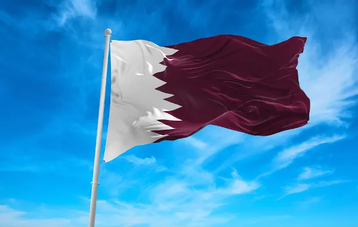

Seleções classificadas
- Venha ver todas as seleções que foram para a copa

1. Catar
Jogadores Convocados
Goleiros
Saad Al Sheeb (Al-Saad CATAR)
Youssef Hassan (Al-Gharafa CATAR)
Meshaal Barsham (Al-Sadd CATAR)
Defensores
Pedro Ro-Ro (Al-Saad CATAR)
Abdelkarim Hassan (Al-Saad CATAR)
Tarek Salman (Al-Saad CATAR)
Musab Kheder (Al-Saad CATAR)
1Homam Ahmed (Al-Gharafa CATAR)
Bassam Al-Rawi (Al-Duhail CATAR)
Boualem Khoukhi (Al-Saad CATAR)
Jassem Gaber (Al-Arabi CATAR)
Meio-Campistas
Abdulaziz Hatem (Al-Rayyan CATAR)
Mohammed Waad (Al-Saad CATAR)
Ali Assadalla (Al-Saad CATAR)
Salem Al-Hajri (Al-Saad CATAR)
Karim Boudiaf (Al-Duhail CATAR)
Assim Madibo (Al-Duhail CATAR)
Mostafa Tarek (Al-Saad CATAR)
Atacantes
Akram Afif (Al-Saad CATAR)
Ahmed Alaaeldin (Al-Gharafa CATAR)
Mohammed Muntari (Al-Duhail CATAR)
Hassan Al-Haydos (Al-Saad CATAR)
Ismaeel Mohammad (Al-Duhail CATAR)
Khalid Muneer (Al-Wakrah CATAR)
Almoez AlI (Al-Duhail CATAR)
Naif Al-Hadhrami (Al-Rayyan CATAR)
>